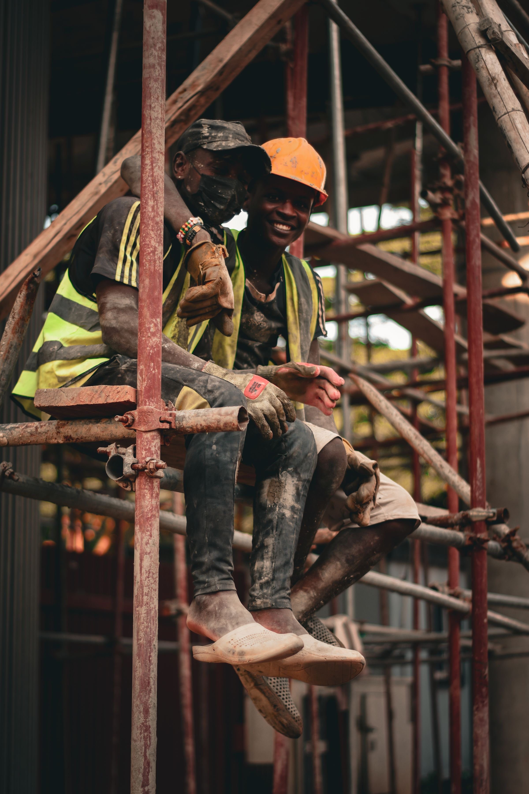
Services
Five categories, delivered under two registrations.
Building works are covered by registration B7/1407/8/2003 and civil engineering works by C7/0703/09/2003. Both are Class 7, local category, and both are held by the same Dodoma firm. The five categories below explain what each service includes and the stage of work it involves. For each one, share the plot location, the drawings you already have, and your programme dates, and we will prepare a written quotation.
Residential Building Construction & Masonry
Structural erection, brickwork masonry, and exterior plastering for modern family bungalows and multi-unit residential properties in the capital region.
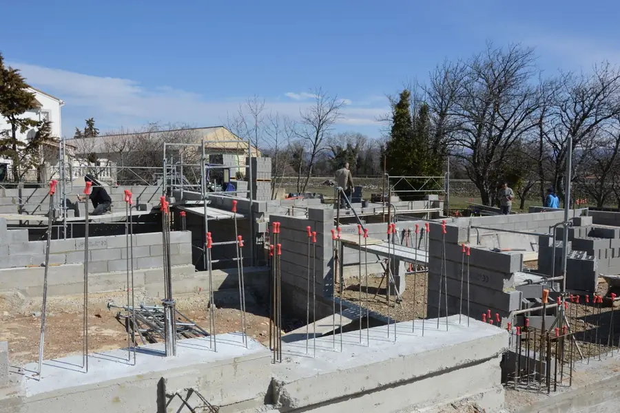
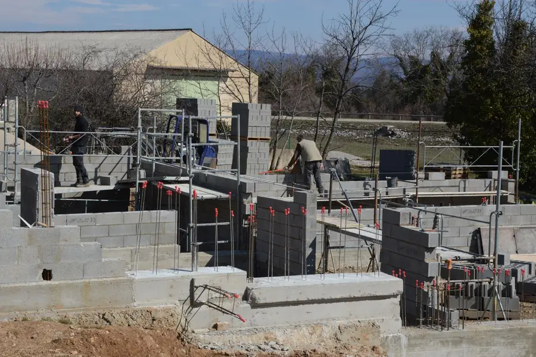
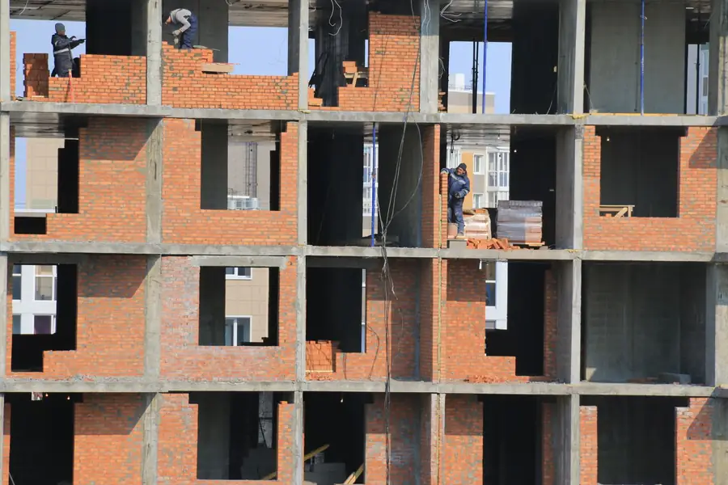
Commercial Perimeter Walling & Security Fencing
High-durability concrete block boundary wall construction, structural footing alignment, and installation of secure perimeter systems for private plots.

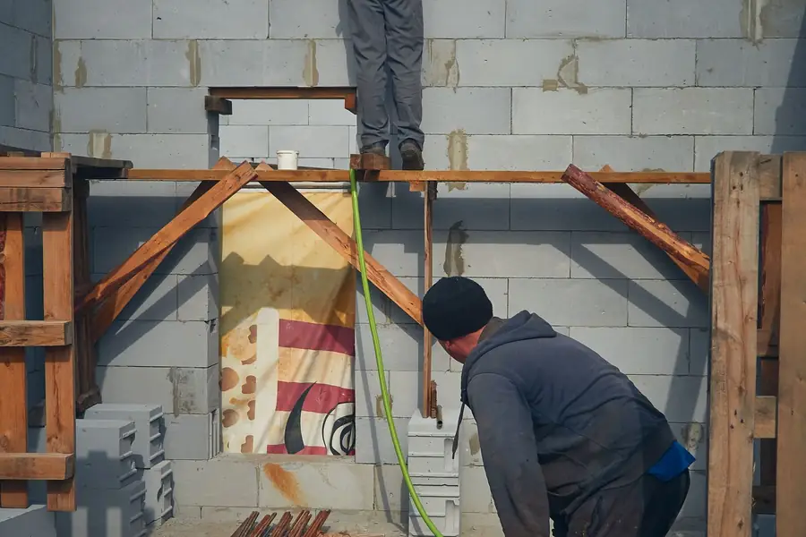
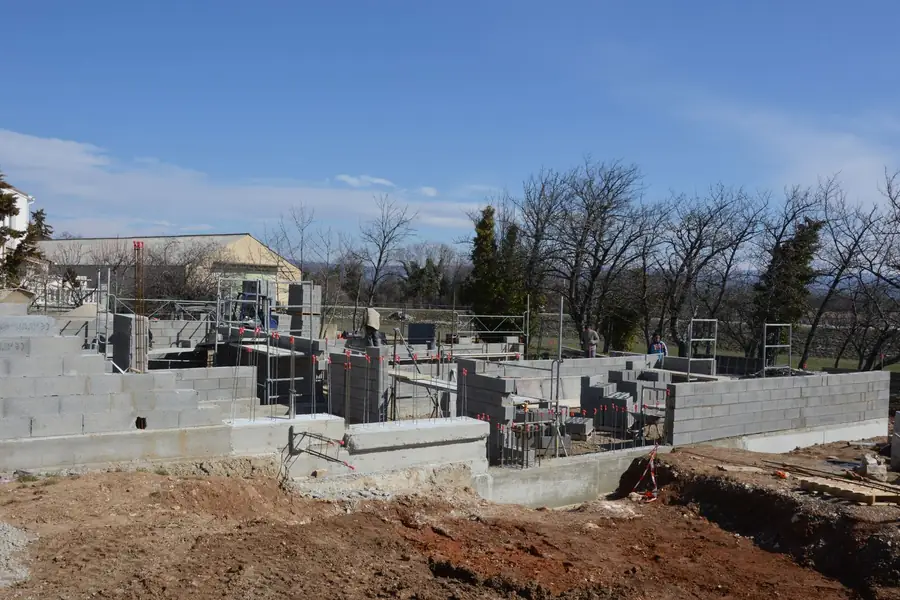
Local Earthworks & Plot Site Grading
Comprehensive site clearance, excavation, structural soil compaction, and foundational grading for new building projects and access roads.
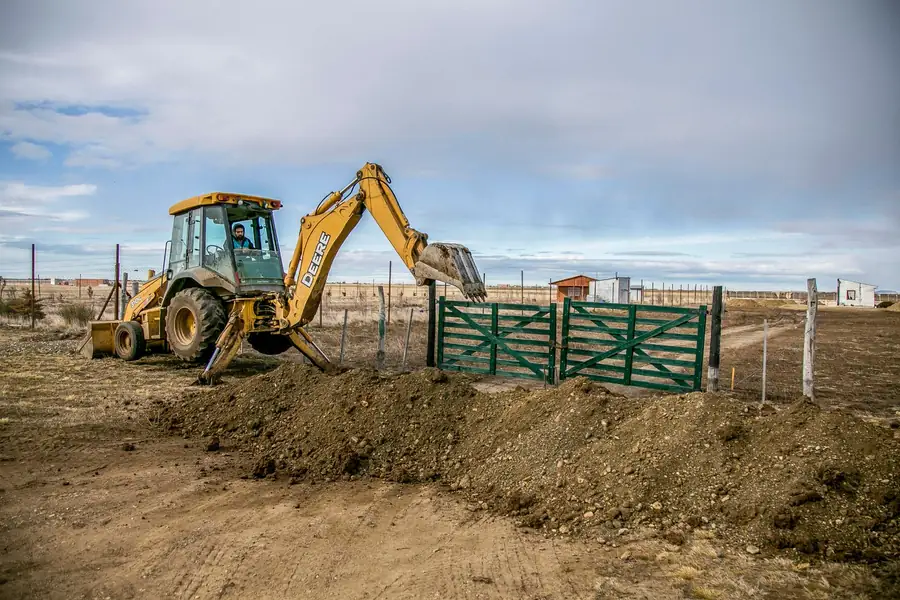
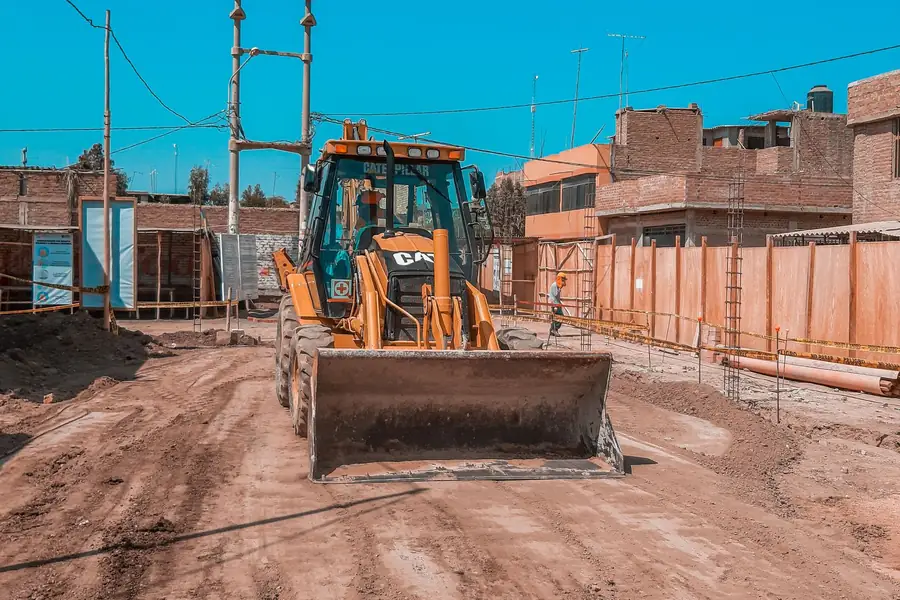
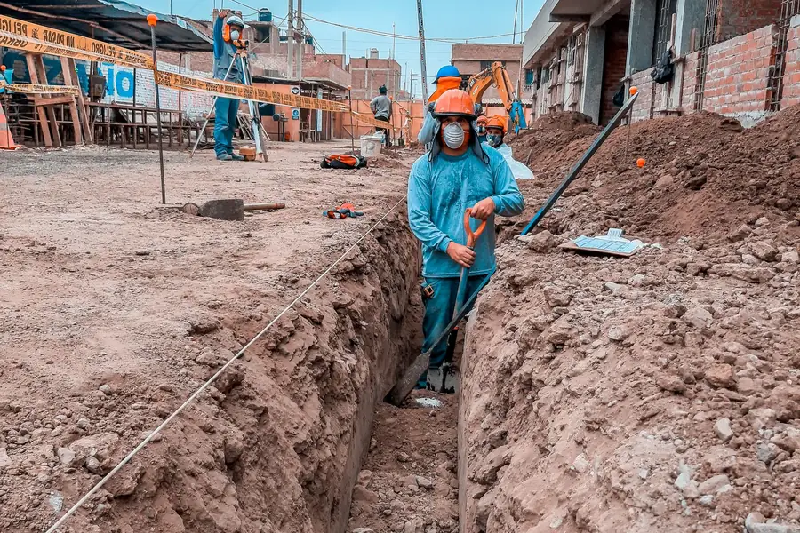
Institutional Rehabilitation & Facility Maintenance
Renovation and maintenance services for public facilities, including structural roofing replacement, structural framing repair, and masonry works.
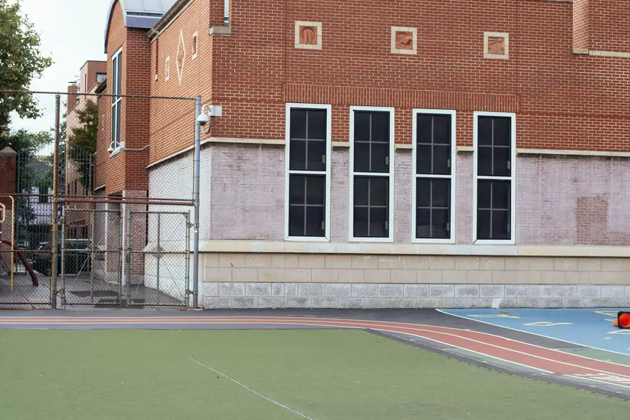
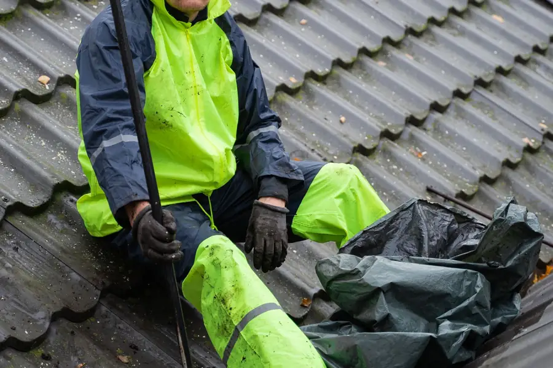
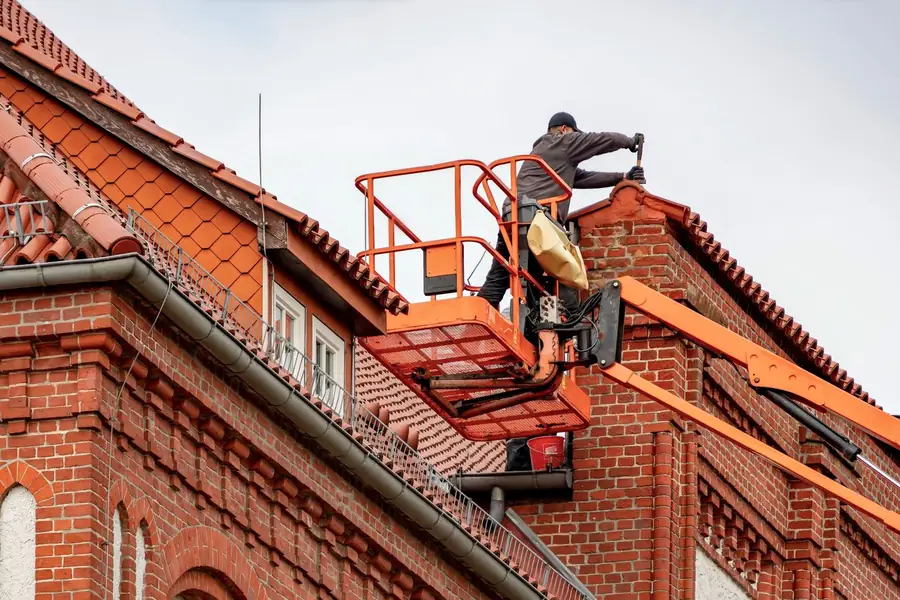
Concrete Slab Foundations & Structural Footings
Precision leveling, steel reinforcement bar grid installations, and structural concrete pouring for reliable ground-floor slab setups.
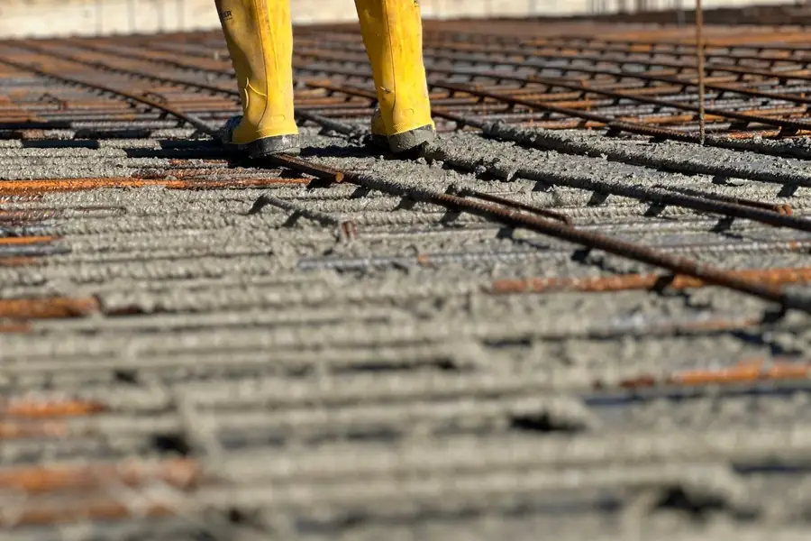
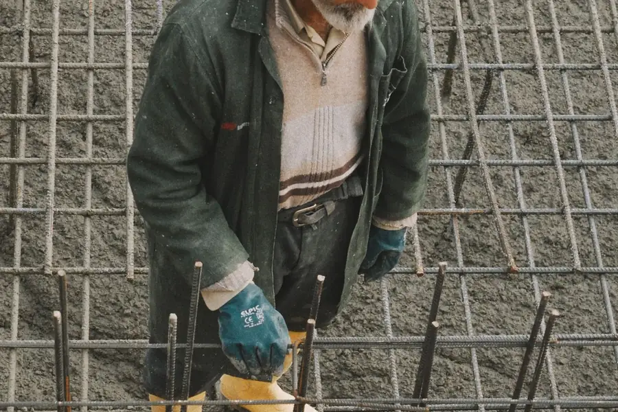
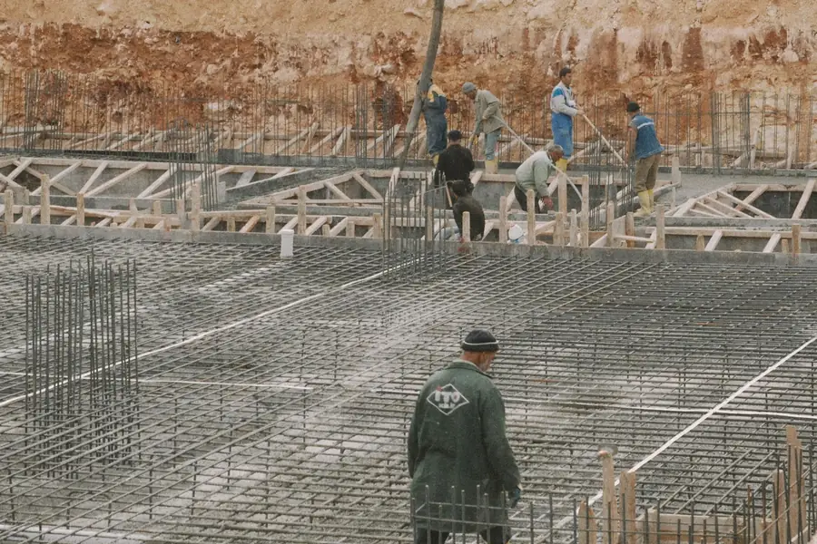
Start a job
Send the scope, get a quotation.
Send the plot location and town, the category of work you need, any drawings or bill of quantities you already have, and the programme dates you are working to — that is enough for us to price the job and put a written quotation in front of you.
Contact Jomka- Building registration
- B7/1407/8/2003
- Civil registration
- C7/0703/09/2003